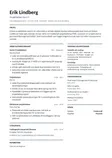
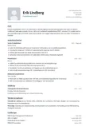
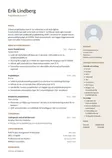
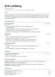
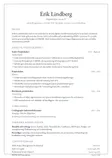
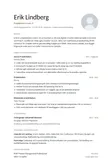

Linne Gratis som Word
Gratismallen i en spalt, och Word-filen kostar inget extra. Georgia i namnet, Calibri i texten och en tunn linje under rubrikerna.
Gratismallen i en spalt, och Word-filen kostar inget extra. Georgia i namnet, Calibri i texten och en tunn linje under rubrikerna.

Gratismallen med foto, också den gratis som Word. Centrerat huvud med rund fotoplats och en accentstapel vid varje rubrik.

Färgat huvudband med namnet i vitt och rund fotoplats. Syns utan att tumma på läsbarheten.

Ljusgrå sidospalt med eget fält för legitimation och behörigheter, kvadratiskt foto. Bra när intygen väger tungt.

Mörkt huvudband som fortsätter i en mörk högerspalt, rund fotoplats. Kontrast som märks i högen.

Garamond, med rubrikerna i en egen vänsterkolumn. Lugn och lätt att skumma.

Årtalen i vänsterkolumnen längs en lodrät accentlinje. Gör karriärstegen tydliga.

Times New Roman, centrerat huvud och dubbel linje. Den formella mallen för juridik, bank och offentlig sektor.

Stort namn i versaler bakom en accentkant, kvadratiskt foto. Rakt och tydligt.

Verdana, rubrikerna som tonade band och kompetenserna i två spalter. Många kompetenser utan att det blir rörigt.

Garamond, högerställt huvud och kursiva rubriker. Elegant utan att bli stel.

Profilen i full bredd, sedan två spalter med accentlinjer. Rymmer lång erfarenhet och många uppdrag.

Georgia-brödtext, små versala rubriker utan linjer, linje ovanför namnet.

Delat huvud med rundat foto, kontakten till höger, understrukna rubriker.

Georgia, centrerat huvud med kort accentlinje, rubriker med linje efter.

Sandfärgad högerpanel med runt foto överst, hårlinje mellan posterna.

Arial, årtalen i en högerkolumn, rubriker med linje i full bredd.

Garamond, tunn ram runt sidan, centrerat namn, spärrade versala rubriker.

Numrerade avsnitt med Georgia-siffra, Georgia-namn med linje under.

Smal färgremsa med kontakten, stort namn, rubriker som fyllda band.

Breda marginaler, stort namn, runt foto till höger, grå rubriker.

Times New Roman, huvudet i dubbel ram, högerställda rubriker.

Verdana, ljusgrått band med foto till vänster, kort linje över rubrikerna.

Kompakt, namn och kontakt på samma rad, kompetenser i tre spalter.

Prickad tidslinje med en punkt vid varje anställning och utbildning.

Vänsterspalt utan bakgrund med accentlinje, stort foto överst.